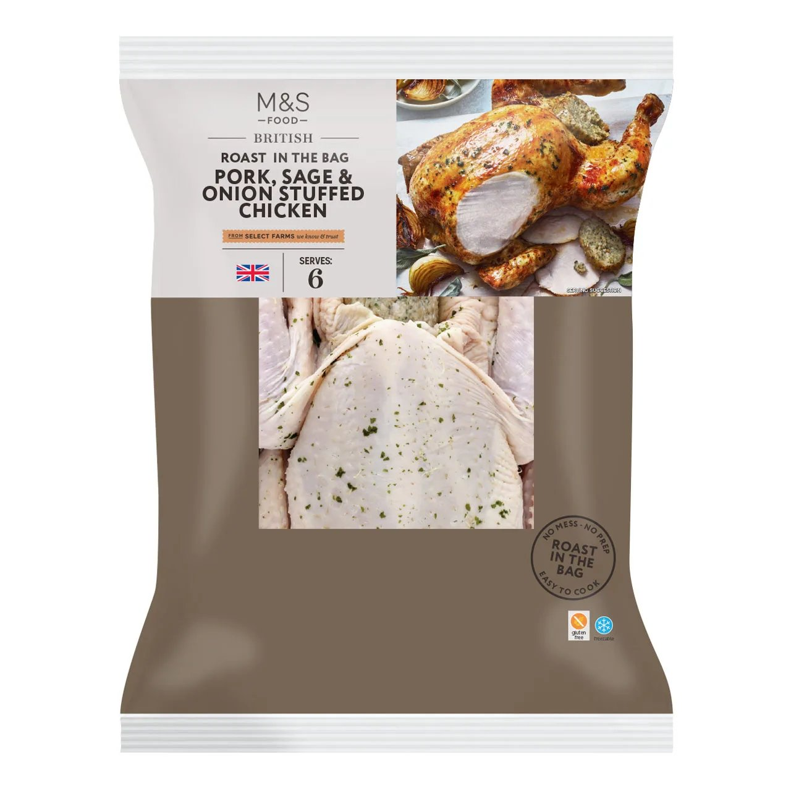
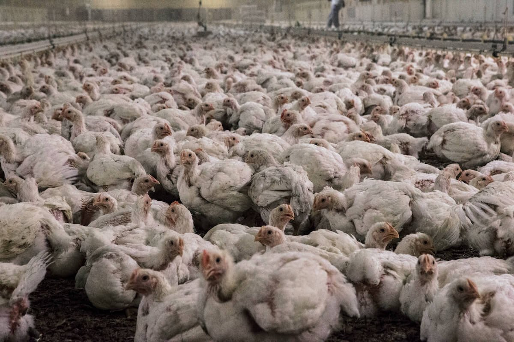
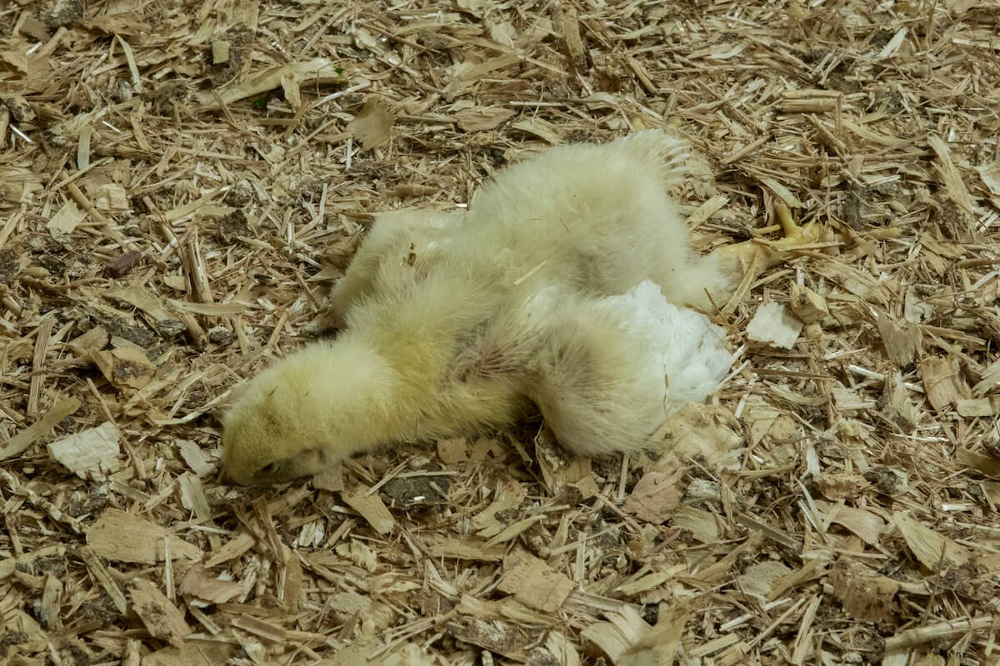
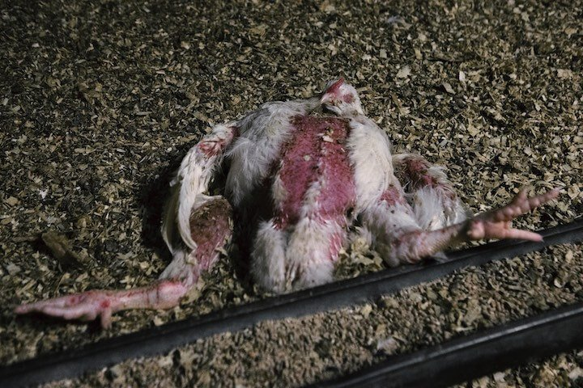
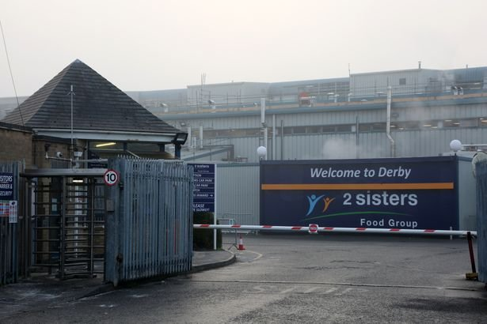

M&S British Roast in the Bag Rotisserie Chicken - £8-11/kg

M&S British Roast in the Bag Garlic & Herb Chicken

M&S Pork, Sage & Onion Stuffed Chicken - also "Roast in the Bag" range
M&S British Roast in the Bag Rotisserie Chicken - £8-11/kg
M&S British Roast in the Bag Garlic & Herb Chicken

M&S Pork, Sage & Onion Stuffed Chicken - also "Roast in the Bag" range
What's on the packaging:
What's NOT on the packaging:
Declared composition:

Example ingredient label showing "Yeast Extract" - legally not MSG, chemically identical
The Truth: Yeast extract contains free glutamic acid—the same active component as monosodium glutamate (MSG).
Food manufacturers use yeast extract to claim "No MSG Added" while achieving identical flavor-enhancement effects. Scientific sources confirm:
Why it's in there: Makes cheap chicken taste better. Acts as a flavor enhancer to mask lower quality meat.
The legal loophole: Because yeast extract occurs "naturally," companies can use it and claim "No MSG Added" despite containing the exact same compound.
Source: Truth in Labeling organization, food science literature
| What £10 Buys You | Weight | Welfare Standard | Additives | Marketing Strategy |
|---|---|---|---|---|
| M&S Roast in Bag | 1.2kg | Barn-raised ("higher welfare") | Yeast extract (MSG), maltodextrin, caramelized sugar, 5% water | HEAVY BRANDING: Premium packaging, "Select Farms", lifestyle marketing. THIS is the product designed to capture premium prices through branding alone. |
| M&S Free-Range Plain | 1.4kg | Free-range (outdoor access) | None - just chicken | MINIMAL BRANDING: Simple packaging, clear free-range label. For informed buyers who read labels. NOT the target audience. |
| Local Butcher Free-Range | 1.5kg | Free-range (traceable farm) | None | BEST OPTION: Direct farm relationships. Real accountability, not corporate certification theater. You can visit the farm and verify welfare yourself. |
Analysis: M&S roast-in-bag chicken costs more per kilogram than genuine free-range alternatives while delivering lower welfare standards and multiple additives.
THE BUTCHER TRUTH: All those supermarket "certifications" - RSPCA Assured, Red Tractor, "Select Farms" - are governed and regulated by industry bodies. The people selling you chicken also control what "high welfare" means. It's self-regulation theater.
Your local butcher? Their reputation IS their certification. When RSPCA Assured fails (see 2024 Animal Justice Project investigation), there's no real accountability. When your butcher's supplier fails, they lose their business. That's the difference.

Multi-tier cage system in "higher welfare" facility - birds confined with limited space

Intensive indoor chicken farming - thousands of birds packed together, zero outdoor access

Dead bird left on shed floor among living birds - documented at supplier farms

Dead bird showing injuries and neglect - welfare conditions at industrial facilities
Context: These conditions were documented at farms supplying major UK retailers. M&S's own supplier (2 Sisters) has been investigated multiple times for similar welfare violations.

2 Sisters Food Group facility - "Welcome to Derby" - one of UK's largest chicken processors

Inside 2 Sisters processing facility - industrial scale chicken processing
Current Status: Still M&S's supplier as of 2026, despite scandal history below.
What happened: M&S withdrew all chicken and turkey products from Hong Kong. Investigation revealed 2 Sisters plants had:
M&S response: Pulled products from Hong Kong market
Consequence for 2 Sisters: Minor disruption, contract continued
Source: South China Morning Post, July 27, 2014
Animal rights organization PETA published undercover footage from two farms operated by Hook2Sisters (joint venture: 2 Sisters + PD Hook) that exclusively supplied M&S's premium "Oakham Gold" chicken line.
Documented conditions:
"The excruciating, nightmarish conditions endured by these chickens supplied to Marks & Spencer show that it doesn't matter which brand you buy or what label you put on it meat comes from agony."
—Elisa Allen, PETA Director
Video Evidence: PETA UK published full investigation footage at:
| M&S Marketing | PETA Investigation Found |
|---|---|
| "Highest standards of animal welfare" | Birds packed among rotting corpses |
| "Enriched environment to encourage movement" | Barren sheds with just feeders and straw |
| "Constant access to food and water" | Lame birds unable to reach water stations |
| "Natural environment" | Industrial sheds, no outdoor access, artificial lighting |
| "Higher welfare Oakham Gold" | Tens of thousands in overcrowded conditions |
M&S response: "We are very disappointed to see the images" - Suspended supply from these specific farms, investigated.
Consequence for 2 Sisters: Temporary suspension, relationship continued.
Source: PETA UK media release, December 19, 2016
The Major Scandal: Joint undercover investigation by The Guardian and ITV News at 2 Sisters' West Bromwich plant.
What undercover reporters documented:
Immediate Impact:
Parliamentary Inquiry Findings:
What Happened Next:
Temporary suspensions and bad publicity, but just one year later (2018): 2 Sisters secured NEW M&S contract. Expanded Carlisle operations with M&S deal. Relationship fully restored. Still supplying M&S today (2026).
Sources: BBC News, The Guardian/ITV News investigation, Parliamentary inquiry reports (September-November 2017)
| Designation | Legal Definition | Outdoor Access | Stocking Density | What It Means |
|---|---|---|---|---|
| Organic | Yes (Soil Association) | Required (with pasture) | 21 kg/m² (9 birds) | Highest welfare, slower breeds, no GMO feed |
| Free-Range | Yes (UK/EU law) | Required (50%+ of life) | 27 kg/m² indoors (12 birds) | Genuine outdoor access, legal requirements |
| RSPCA Assured | Private certification | NOT required (can be indoor only) | ~35 kg/m² (15-16 birds) | Better than standard but NOT free-range |
| "Higher Welfare" | NONE | Not specified | Unknown (likely 35-38 kg/m²) | No legal meaning - pure marketing |
| Factory Farming | Basic minimum | None | 39 kg/m² (18 birds) | Cheapest, lowest welfare |
Shocking UK Statistics:
How many adult chickens fit in 1 square meter (red telephone box floor)?
M&S roast-in-bag chicken is marginally better than 18 birds/m² but nowhere near the 12 birds/m² of actual free-range.
The Problem: In UK law, "free-range" and "organic" have strict legal definitions. "Higher welfare" does not.
How M&S exploits this: Uses "higher welfare" prominently on packaging. Sounds almost as good as "free-range" to average consumer. Commits them to exactly nothing legally. Could be 1% better than factory farming and still qualify.
What consumers think: "RSPCA = free-range and happy animals"
The reality: RSPCA Assured has TWO different standards:
The logo looks the same for both. Multiple investigations (2016, 2024) found welfare issues at RSPCA Assured farms.
UK Food Labeling Law: If you add MSG to food, you must list it.
What companies discovered: Use yeast extract instead = don't have to say "MSG"
The chemistry: Both contain the exact same active ingredient - free glutamic acid
Deception level: Maximum
Here's the genius:
The legal position: Everything they do is technically allowed.
The ethical position: They're deliberately deceiving consumers using legal loopholes.
OSINT = Open Source Intelligence
Investigative technique using only publicly available information. No hacking, no insider leaks, no hidden sources.
This investigation establishes that M&S's roast-in-bag chicken range represents a case study in how premium branding, vague welfare terminology, and regulatory gaps combine to create consumer misconception.
Every fact presented here exists in public records. M&S publishes ingredient lists. News organizations investigated 2 Sisters. Animal welfare groups documented conditions. Parliamentary committees held inquiries. PETA published photographic and video evidence.
The information is all there. The question is whether consumers will demand the transparency that would make such investigations unnecessary.
Official Documents:
Investigative Journalism:
Animal Welfare Investigations:
Regulatory & Scientific:
Investigation compiled May 24, 2026 | OSINT Methodology | All information publicly verifiable